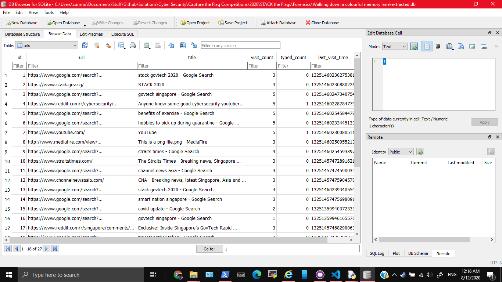
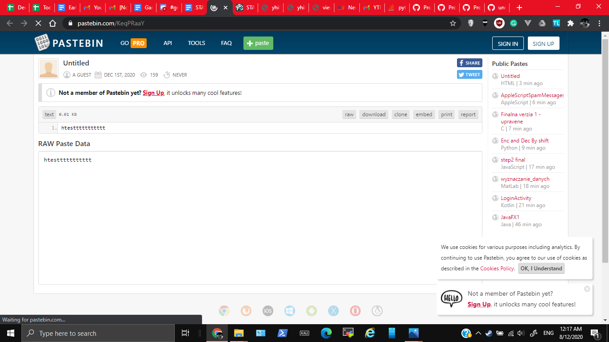

992, FORENSICS, 6 SOLVES
We are trying to find out how did our machine get infected. What did the user do?
Please view this Document for download instructions.
This challenge:
My friend undefined-func used volatility to extract out some files during the challenge, the most important one is file.None.0xfffffa801a81fab0.dat
On redoing the challnge here are the steps he told me
imageinfo to know what profile to use
Win7SP1x64 from the output below$ volatility imageinfo -f forensics-challenge-1.mem
Volatility Foundation Volatility Framework 2.6
INFO : volatility.debug : Determining profile based on KDBG search...
Suggested Profile(s) : Win7SP1x64, Win7SP0x64, Win2008R2SP0x64, Win2008R2SP1x64_24000, Win2008R2SP1x64_23418, Win2008R2SP1x64, Win7SP1x64_24000, Win7SP1x64_23418
AS Layer1 : WindowsAMD64PagedMemory (Kernel AS)
AS Layer2 : FileAddressSpace (/mnt/c/Users/zunmu/Documents/Stuff/forensics-challenge-1.mem)
PAE type : No PAE
DTB : 0x187000L
KDBG : 0xf800029fb0a0L
Number of Processors : 1
Image Type (Service Pack) : 1
KPCR for CPU 0 : 0xfffff800029fcd00L
KUSER_SHARED_DATA : 0xfffff78000000000L
Image date and time : 2020-12-03 09:12:22 UTC+0000
Image local date and time : 2020-12-03 17:12:22 +0800
netscan$ volatility --profile=Win7SP1x64 netscan -f forensics-challenge-1.mem
Volatility Foundation Volatility Framework 2.6
Offset(P) Proto Local Address Foreign Address State Pid Owner Created
0x7dc07790 UDPv4 0.0.0.0:68 *:* 756 svchost.exe 2020-12-03 09:12:15 UTC+0000
0x7dc6d700 UDPv4 0.0.0.0:58881 *:* 500 svchost.exe 2020-12-03 09:11:26 UTC+0000
0x7dc9b010 UDPv4 0.0.0.0:49797 *:* 692 chrome.exe 2020-12-03 09:12:14 UTC+0000
0x7dcbad70 UDPv4 0.0.0.0:59347 *:* 692 chrome.exe 2020-12-03 09:11:25 UTC+0000
0x7dcbad70 UDPv6 :::59347 *:* 692 chrome.exe
2020-12-03 08:52:06 UTC+0000
0x7e3b0010 UDPv4 0.0.0.0:3702 *:* 252 svchost.exe 2020-12-03 08:52:06 UTC+0000
0x7e3b0350 UDPv4 0.0.0.0:54247 *:* 252 svchost.exe 2020-12-03 08:52:06 UTC+0000
0x7e3b0350 UDPv6 :::54247 *:* 252 svchost.exe 2020-12-03 08:52:06 UTC+0000
0x7dc18580 TCPv4 192.168.197.128:49308 23.44.5.89:80 ESTABLISHED 2904 chrome.exe
0x7dc46cf0 TCPv4 192.168.197.128:49307 192.124.249.31:80 ESTABLISHED 2904 chrome.exe
0x7dccdcf0 TCPv4 -:49293 151.101.9.140:443 CLOSED 692 chrome.exe
0x7dcfa810 TCPv4 -:49301 119.9.70.218:443 CLOSED 692 chrome.exe
0x7dd38c50 TCPv4 192.168.197.128:49278 23.5.165.147:80 ESTABLISHED 2904 chrome.exe
0x7dda5010 TCPv4 192.168.197.128:49309 104.18.21.226:80 ESTABLISHED 2904 chrome.exe
0x7e0737f0 TCPv6 -:0 38ab:2f1a:80fa:ffff:38ab:2f1a:80fa:ffff:0 CLOSED 4 System
0x7e3b19e0 TCPv6 -:0 38ab:2f1a:80fa:ffff:38ab:2f1a:80fa:ffff:0 CLOSED
2904) got ESTABLISHED connection, which is suspicious.
$ volatility -f forensics-challenge-1.mem --profile=Win7SP1x64 memdump dumpfiles --dump-dir=./ -p 2904
Volatility Foundation Volatility Framework 2.6
************************************************************************
Writing chrome.exe [ 2904] to 2904.dmp
$ strings 2904.dmp | grep "http://"
http://ocsp.digicert.com0:
)http://crl3.digicert.com/Omniroot2025.crl0m
http://www.mediafire.com/view/5wo9db2pa7gdcoc/This_is_a_png_file.png/file
http://www.mediafire.com/view/5wo9db2pa7gdcoc/This_is_a_png_file.png/file
http://mediafire.com/
MmCahttp://s@^
http://a
ReTahttp://s
FMslhttp://w
http://www.mediafire.com/view/5wo9db2pa7gdcoc/This_is_a_png_file.png/file
$http://certs.godaddy.com/repository/1301
&http://crl.godaddy.com/gdig2s1-910.crl0]
+http://certificates.godaddy.com/repository/0
http://ocsp.godaddy.com/0@
4http://certificates.godaddy.com/repository/gdig2.crt0
$
chromehistory command to check. You can get the plugin from here. Then you can get the suspicious URL to work through there$ volatility -f forensics-challenge-1.mem --profile=Win7SP1x64 filescan > filescan.txt
Volatility Foundation Volatility Framework 2.6
$ head filescan.txt
Offset(P) #Ptr #Hnd Access Name
------------------ ------ ------ ------ ----
0x000000007d292510 1 1 R--r-d \Device\HarddiskVolume1\Program Files\Google\Chrome\Application\86.0.4240.198\chrome_100_percent.pak
0x000000007d292900 12 0 R--r-d \Device\HarddiskVolume1\Windows\System32\wercplsupport.dll
0x000000007dc018b0 2 1 ------ \Device\NamedPipe\mojo.2904.1772.18008832196772932115
0x000000007dc01a00 1 1 R--rw- \Device\HarddiskVolume1\Program Files\Google\Chrome\Application\86.0.4240.198
0x000000007dc03260 2 1 ------ \Device\NamedPipe\mojo.2904.1772.718663783432554285
0x000000007dc04310 3 3 R--r-- \Device\HarddiskVolume1\Windows\Fonts\segoeuib.ttf
0x000000007dc04730 2 1 ------ \Device\NamedPipe\mojo.2904.1772.939864627197359849
0x000000007dc04880 2 1 ------ \Device\NamedPipe\mojo.2904.1772.7433814428407545744
$ volatility -f forensics-challenge-1.mem --profile=Win7SP1x64 dumpf
iles -Q 0x000000007f38d070 -D .
Volatility Foundation Volatility Framework 2.6
DataSectionObject 0x7f38d070 None \Device\HarddiskVolume1\Users\owlli\AppData\Local\Google\Chrome\User Data\Default\History
SharedCacheMap 0x7f38d070 None \Device\HarddiskVolume1\Users\owlli\AppData\Local\Google\Chrome\User Data\Default\History
$ ls
file.None.0xfffffa801998b780.vacb file.None.0xfffffa801a81fab0.dat
$ file file.None.0xfffffa801998b780.vacb
file.None.0xfffffa801998b780.vacb: empty
$ file file.None.0xfffffa801a81fab0.dat
file.None.0xfffffa801a81fab0.dat: SQLite 3.x database, last written using SQLite version 3033000
Some useful links to know more about volatility are
He extracted out a .dat file. On running that through the file command, it revealed a database file
$ file file.None.0xfffffa801a81fab0.dat
file.None.0xfffffa801a81fab0.dat: SQLite 3.x database, last written using SQLite version 3033000
Opening it in DB browser and looking through the database revealed the Chrome browser history.

The links which stand out are
Pastebin seemed like nothing suspicious 
The png file seemed interesting (Because it was colourful like what the challenge title suggested). I downloaded it.
I then used Python and the Python Imaging Library with solve.py to extract the RGB values from the image, and convert them into letters through ASCII
govtech-csg{m3m0ry_R3dGr33nBlu3z}
{kind=link}